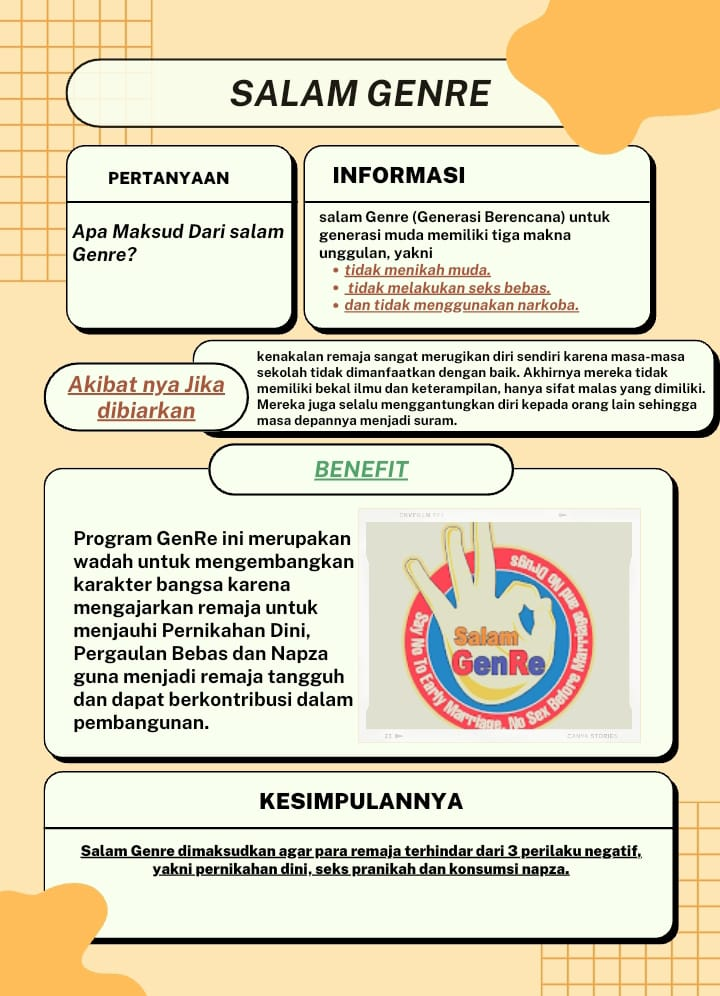
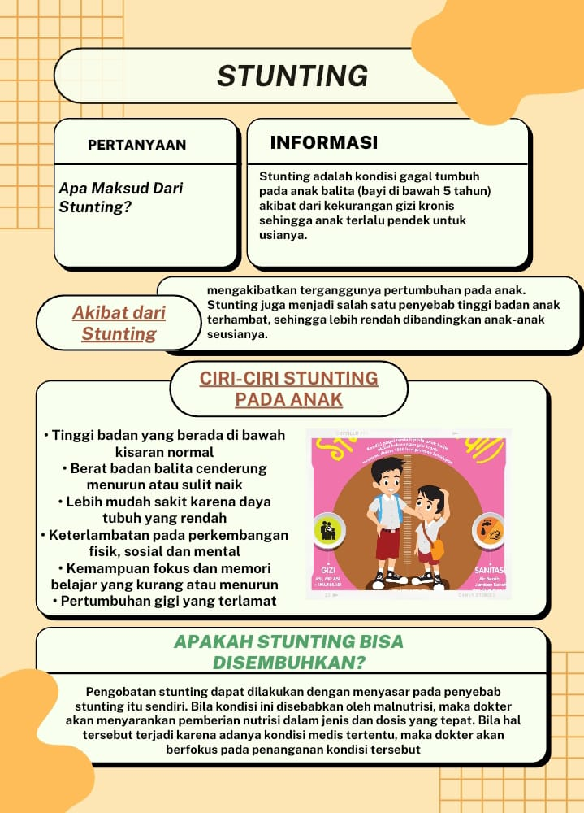
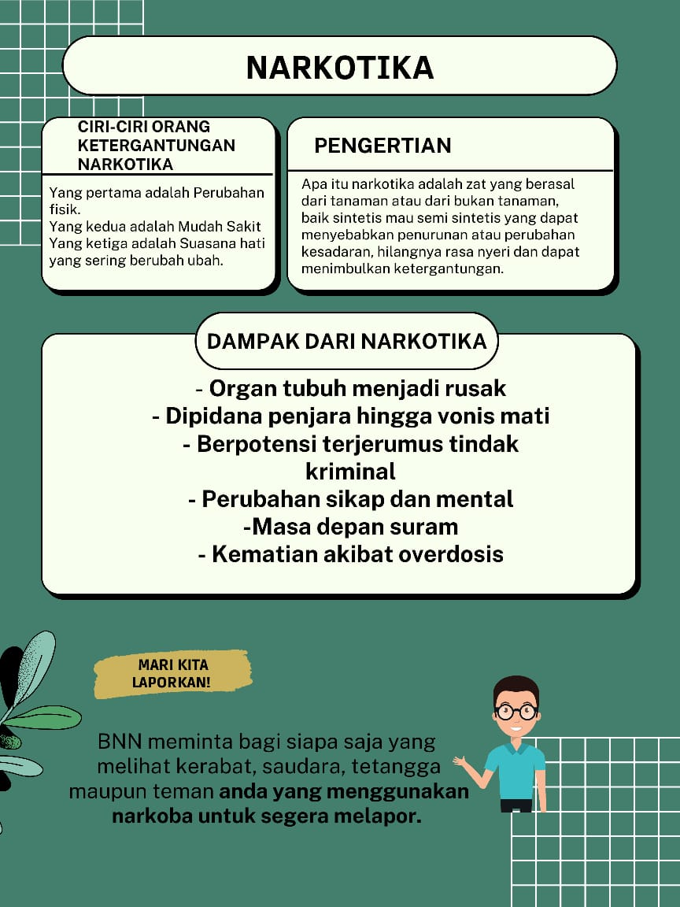

Salam GenRe

Program GenRe ini merupakan wadah untuk mengembangkan karakter bangsakarena mengajarkan remaja untuk menjauhi Pernikahan dini, Pergaulan bebas, dan Napza guna menjadi remaja tangguh dan dapat berkontribusi dalam pengembangan.
Akibatnya jika dibiarkan kenakalan remaja sangat merugikan diri sendiri karena masa masa sekolah tidak dimanfaatkan dengan baik. Akhirnya mereka tidak memiliki bekal ilmu dan keterampilan, hanya sifat malas yang dimiliki. Mereka juga selalu menggantungkan diri kepada orang lain sehingga masa depannya menjadi suram.
Salam GenRe dimaksudkan agar remaja terhindar dari 3 perilaku negatif, yakni pernikahan dini, seks pranikah, dan napza.
Stunting

Stunting adalah kondisi gagal tumbuh pada anak balita (bayi dibawah 5 tahun) akibat dari kekurangan gizi kronis sehingga anak terlalu pendek untuk usianya.
Ciri-Ciri Stunting pada Anak
- Tinggi badan yang berada di bawah kisaran normal
- Berat badan balita cenderung menurun atau sulit naik
- Lebih mudah sakit karena daya tubh yang rendah
- Keterlambatan pada perkembangan fisik, sosial, dan mental
- Kemampuan fokus dan memori belajar yang kurang atau menurun
- Pertumbuhan gizi yang terlambat
Pengobatan stunting dapat dilakukan dengan menyasar pada penyebab stunting itu sendiri. Bila kondisi ini disebabkan malnutrisi, maka dokter akan menyarankan pemberian nutrisi dalam jenis dosis yang tepat. Bila hal tersebut terjadi karena adanya kondisi mental tertentu, maka dokter akan berfokus pada penanganan kondisi tersebut.
Narkotika

Narkotika adalah zat yang berasal dari tanaman atau dari bukan tanaman, baik sintesis maupun semi sintesis yang dapat menyebabkan penurunan atau perubahan kesadaran, hilangnya rasa nyeri dan dapat menimbulkan ketergantungan.
Dampak dari Narkotika
- Organ tubuh menjadi rusak
- Dipidana penjara hingga vonis hukum mati
- Berpotensi terjerumus tindak kriminal
- Perubahan sikap dan mental
- Masa depan suram
- Kematian akibat overdosis
Ciri-Ciri Orang Ketergantungan Narkotika
- Perubahan fisik
- Mudah sakit
- Suasana hati yang sering berubah ubah
Interaksi Sosial
Pengertian interaksi sosial
Interaksi sosial adalah hubungan dinamis yang mempertemukan orang dengan orang, orang dengan kelompok, maupun kelompok dengan kelompok manusia
Interaksi sosial terjadi apabila diantara pihak yang berinteraksi melakukan kontak sosial dan komunikasi. Kontak sosial dapat diartikan sebagai hubungan antara dua pihak yang saling bereaksi dan menjadi terjadinya kontak sosial. Komunikasi adalah cara kita menyampaikan pesan kepada orang lain.
Ciri-Ciri Interaksi Sosial
- Jumlah pelakunya lebih dari seorang
- Adanya hubungan timbal balik
- Adanya komunikasi antar pelaku
- Adanya suatu tujuan tertentu
Bentuk Interaksi Sosial
Bentuk interaksi sosisal dibagi menjadi dua, yaitu Asosiatif dan Disasosiatif. Asosiatif merupakan hubungan masyarakat dalam bentuk penyatuan, sementara Disasosiatif adalah interaksi sosial yang mengarah pada bentuk pemisahan dan terbagi.
Faktor yang dapat Mempengaruhi Interaksi Sosial
- Faktor Imitasi
- Faktor Identifikasi
- Faktor Sugesti
- Faktor Simpati
- Faktor Empati
- Faktor Motivasi
Faktor yang dapat Mempengaruhi Interaksi Sosial
Faktor Imitasi
Faktor imitasi merupakan proses seseorang mencontoh orang lain atau kelompok yang diidolakannya.
Faktor Identifikasi
Faktor identifikasi merupakan keinginan atau kecenderungan seseorang untuk menjadi sama dengan orang yang diiodlakannya.
Faktor Sugesti
Faktor sugesti ini adalah pengaruh yang dapat menggerakan hati orang.
Faktor Simpati
Faktor simpati adalah rasa ketertarikan seseorang terhadap orang lain sehingga bisa merasaakn kondisi emosional yang sedang dirasakan orang tersebut.
Faktor Empati
Faktor empati adalah kemampuan seseorang untuk membayangkan atau imajinasi perasaan orang lain.
Faktor Motivasi
Faktor motivasi adalah suatu faktor yang mendorong seseorang untuk melakukan suatu aktivitas tertentu.
Interaksi Antar Ruang
Interaksi antar ruang adalah pergerakan orang, barang, atau informasi dari satu daerah ke daerah lain atau dari daerah ke asal tujuan.
Interaksi dalam pergerakan manusia ini sering disebut dengan istilah mobilitas penduduk. Sementara itu interaksi dalam bentuk perpindahan barang disebut dengan transportasi.
Reset Materi